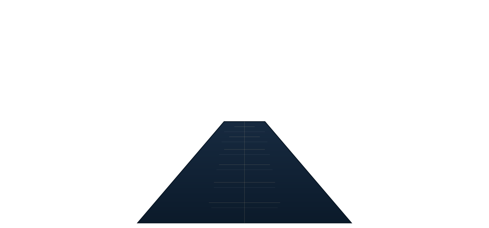
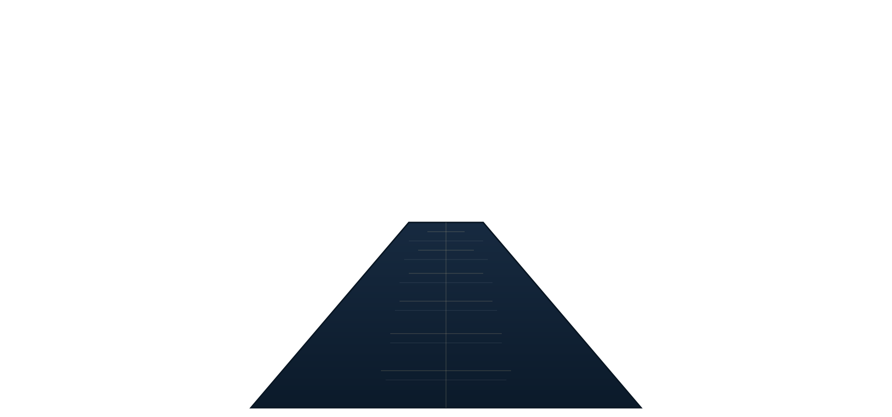

LLM Automation & Security Analysis
Challenge: Security teams were overwhelmed with alert volumes and manual triage processes, leading to delayed threat responses.
Solution: Developed LLM-powered automation pipelines that parse security findings, apply confidence thresholds, and route alerts with context-aware prioritization while maintaining human oversight.
Impact: Reduced analyst workload by 60%, improved mean time to response, and created clear dashboards for executive reporting.
Technologies: Python, LLM APIs, Security Information Systems, Data Parsers